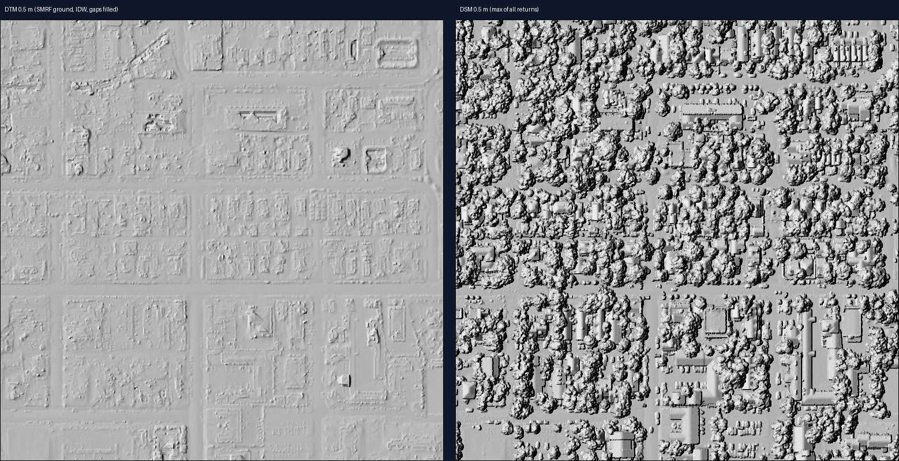

Nurtac Suleymanzade · GIS / 3D & Advanced
LiDAR processing — denoise, classify, DTM / DSM
A real USGS 3DEP airborne LiDAR tile (Boulder, Colorado; about 380 × 380 m, 3.6 million points) processed end-to-end with PDAL.
Open 3D point-cloud viewer

Pipeline (PDAL 2.x in Docker)
readers.ept: stream only the area of interest from the public USGS Entwine dataset (no full-tile download), reproject to UTM 13N + NAVD88.- Original vendor classes are wiped (
Classification = 0) so the result shows only my own processing. - Noise removal:
filters.outlier(statistical, k = 12, 2.5σ) +filters.elm(extended local minimum) flag isolated and low-outlier returns as class 7. That is 96,555 points (2.7 %), removed from the products. - Ground:
filters.smrf(Simple Morphological Filter: slope 0.2, window 16 m, threshold 0.45 m). - Buildings / vegetation:
filters.hag_nncomputes height above ground.filters.approximatecoplanartests local planarity. Points > 2.5 m that are planar → building (6), other points > 2 m → high vegetation (5), the rest → other / low (1). - Rasters:
writers.gdal: DSM = max of all returns, DTM = IDW of ground, both 0.5 m. DTM gaps under buildings filled withgdal_fillnodata.
Who benefits / value
Who benefits. Architects & engineers (bare-earth DTM and building heights for site design), mining & quarrying (stockpile/terrain surfaces), municipalities & utilities (tree canopy and building inventories, vegetation encroachment), forestry & academia (canopy height models). Value: turns raw, noisy point clouds into clean classified LAZ plus DTM/DSM rasters that drop straight into QGIS, ArcGIS or CAD.
Data credits
U.S. Geological Survey 3D Elevation Program, project CO_DRCOG_1_2020 (public domain), via the AWS Open Data usgs-lidar-public Entwine bucket.
All outputs on this page were produced from open data with free software (Blender, PDAL, GDAL, OpenDroneMap, MapLibre GL, Three.js). Compute: a cloud Linux workstation with NVIDIA L4 GPUs.